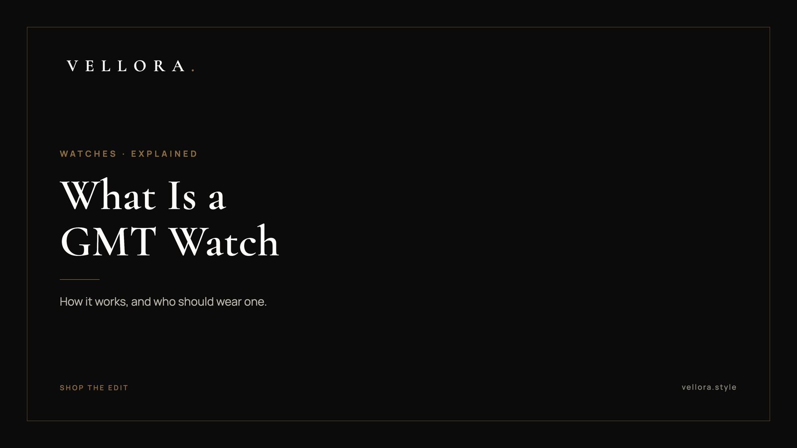

WATCHES
What Is a GMT Watch? How It Works and Who Should Buy One
By Vansh Shah, Founder

- A GMT watch adds a fourth hand that circles the dial once every 24 hours, so you can read a second time zone at a glance.
- Set the main hands to where you are and the 24-hour hand to home. A rotating 24-hour bezel can add a third zone.
- The function sits on top of a movement: hand-wound, automatic, quartz or solar. Each asks something different of you.
- A GMT tracks time zones. A chronograph times events. They solve different problems.
- Most men are well served by one to three watches, and a GMT is often the most useful second one.
- What a GMT is, and where the idea came from
- How the second time zone hand works
- How to read a GMT watch
- The movement inside: watch movement types explained
- GMT vs chronograph, and how to read a chronograph watch
- What makes a watch luxury, and what you pay for
- Our GMT pick: the GMT-Master II
- How many watches should a man own
What is a GMT watch? It is a watch with an extra hour hand that travels around the dial once every 24 hours instead of every 12. You read that hand against a 24-hour scale, usually on the bezel, to track a second time zone. GMT stands for Greenwich Mean Time, the old reference point for world time.
That is the short answer to what is a GMT watch. Most people who ask what is a GMT watch are really asking two more things: how do I read it, and do I need one. Below we cover the hand, the bezel, the movement inside, how a GMT differs from a chronograph, and how many watches a man actually needs. We get asked what is a GMT watch more than almost anything else in our watch edit, usually by someone standing over a GMT-Master II and wondering what the fourth hand is for. So here is what is a GMT watch, explained slowly.
What a GMT is, and where the idea came from
A GMT is a complication. In watch terms, that means any function beyond hours, minutes and seconds. A date window is a complication. So is a chronograph. A GMT complication adds one thing: a second hour hand geared to make a single lap every 24 hours.
The idea grew up with long-haul flying in the 1950s. Pilots crossing several zones needed home time and local time on one wrist, read without arithmetic. A 24-hour hand also solves a problem a normal dial cannot. On a 12-hour dial, 3 in the morning and 3 in the afternoon look identical. On a 24-hour scale, they sit on opposite sides.
Today the same tool suits frequent flyers, people who work with teams abroad, and anyone with family in another country. With the GMT watch explained in one line: it keeps a second clock running without asking you to do the math.
How the second time zone hand works
On most GMT watches the extra hand is thin, often in a contrasting color, and tipped with an arrow or triangle so you never confuse it with the main hour hand. It is driven by the same movement as the other hands, just geared to turn at half the speed of the normal hour hand.
The 24-hour scale it points to can sit in one of two places:
- On a rotating bezel around the crystal, marked 24 at the top and 12 at the bottom.
- On a fixed ring or printed track on the dial itself.
Many GMT bezels use two colors to split the day, a lighter or brighter half for daytime hours and a darker half for night. You can tell whether it is morning or evening back home at a glance, before you read the exact hour.
Flyer and caller GMTs
GMT movements come in two broad types, and the difference matters if you travel a lot.
- A flyer GMT lets you jump the main hour hand forward or back in one-hour steps without stopping the watch. You land, adjust local time in seconds, and the 24-hour hand keeps home time untouched.
- A caller GMT, sometimes called an office GMT, works the other way round. You set the 24-hour hand on its own to a zone you call or email often, and leave the main hands alone.
Neither is better. A flyer suits someone who changes zones. A caller suits someone who stays put and works across them.
How to read a GMT watch
Reading one takes about a minute to learn. Here is the routine we use.
- Set the hour and minute hands to local time, where you are now.
- Turn the bezel so 24 sits at 12 o'clock, its neutral position.
- Set the 24-hour hand to home time. If it is 8 in the evening at home, the hand points to 20.
- Read home time from the 24-hour hand against the bezel. Read local time from the main hands as usual.
Want a third zone? Rotate the bezel by the hour difference. If a city is three hours ahead of home, turn the bezel so the 24-hour hand now points three hours later. You read the third zone from the bezel and still read home time from the fixed dial track, if your watch has one.
An annotated diagram, in words
| Part | Where you find it | What it tells you |
|---|---|---|
| Hour hand | Center, short and broad | Local hour on the 12-hour dial |
| Minute hand | Center, long | Minutes, shared by every zone |
| Seconds hand | Center, thin | Confirms the watch is running |
| 24-hour hand | Center, slim with an arrow tip | Home or reference hour on the 24-hour scale |
| 24-hour bezel | Rotating ring around the crystal | The scale the 24-hour hand reads against, or a third zone when turned |
| Day and night colors | Two halves of the bezel | Whether it is daytime or night in the second zone |
| Crown | Right side of the case, on most models | Winds and sets the hands, and on many models the date |
The movement inside: watch movement types explained
The GMT function sits on top of a movement, the engine that keeps the watch running. With watch movement types explained in plain terms, there are four you will meet.
Mechanical, manual wind
A hand-wound movement runs on a coiled mainspring. You wind it by turning the crown, usually once a day or every couple of days depending on the caliber. The spring releases its energy through a gear train, and a balance wheel swinging back and forth keeps the rate steady. Some owners find the daily wind a small pleasure. Others forget and find the watch stopped.
Automatic
An automatic is a mechanical movement with a weighted rotor that spins as your wrist moves and winds the mainspring for you. Wear it daily and it keeps going. Leave it in a drawer and it stops once the power reserve runs out, which on many modern movements is a couple of days. A watch winder or a quick hand wind brings it back.
Quartz
A quartz movement uses a battery to send current through a tiny quartz crystal, which vibrates at a very steady frequency. A circuit counts those vibrations and drives the hands. Quartz is far more accurate day to day than a mechanical movement and needs only a battery change every few years.
Solar
A solar watch is a quartz watch that charges itself. Light falling on the dial feeds a rechargeable cell, so you rarely, if ever, think about a battery. Our Seiko Prospex pieces are solar, and they are the easiest watches we carry to live with.
| Movement | Power source | What it asks of you | Who it suits |
|---|---|---|---|
| Manual wind | Mainspring, wound by the crown | A regular wind | Someone who enjoys the ritual |
| Automatic | Mainspring, wound by a rotor as you move | Regular wear, or a winder | A daily wearer who wants a mechanical watch |
| Quartz | Battery | A battery change every few years | Accuracy first, no fuss |
| Solar | Light, stored in a rechargeable cell | Some light now and then | Travel and grab-and-go wear |
GMT vs chronograph, and how to read a chronograph watch
People mix these up because both add hands to the dial. They do different jobs. A GMT tells you what time it is somewhere else. A chronograph is a stopwatch built into the watch.
On most chronographs, two pushers sit beside the crown. Here is how to read a chronograph watch:
- Press the top pusher to start timing. The large central seconds hand, which usually sits still, begins to sweep.
- Press the top pusher again to stop it.
- Press the bottom pusher to reset everything to zero.
- Read elapsed seconds from the central hand, elapsed minutes from one sub-dial and, where there is one, elapsed hours from another. A separate small sub-dial often shows the running seconds of the time itself.
Many chronographs also carry a tachymeter scale on the bezel or dial edge. Time how long something takes to cover a known distance, such as a kilometer, and the scale gives you the average speed.

If you want a solar chronograph to try this on, the Seiko Prospex Speedtimer Go Large Solar is in our edit. If you want a second time zone, you want a GMT.
What makes a watch luxury, and what you pay for
A quartz watch from almost anywhere keeps good time. So what makes a watch luxury? Mostly the things you notice only after a year of wear.
- The movement. How it is designed, finished, adjusted and regulated, and whether it was developed by the maker itself.
- Materials. Precious metals, specific steel alloys, scratch-resistant ceramic bezels and sapphire crystals.
- The case and bracelet. Tight tolerances, a clasp that adjusts cleanly, edges that are finished rather than left sharp.
- The dial. Applied markers, even lume, printing that stays crisp under a loupe.
- After-care. A maker that can service the watch properly for decades.
- History and restraint. A design refined slowly over many years tends to age better than one built for a season.
None of this is visible in a photograph. All of it shows on the wrist, slowly.
Our GMT pick: the GMT-Master II

The GMT watch we carry is the GMT-Master II, reference 126710GRNR. The catalog lists it plainly: an Oyster case, 40 mm, in Oystersteel. The name tells you its job. It is a GMT watch, with the second time zone hand and 24-hour reading described above.
At 40 mm it sits in the middle of the range, comfortable on most wrists and easy under a shirt cuff. We would suggest it as a first serious GMT for someone who travels or works across zones. The full listing and photographs are on the product page. If you are comparing it with other references, our guide to the best luxury watches for men and our note on the top luxury watch brands worth knowing are calm places to look next.
How many watches should a man own
Fewer than you think. How many watches should a man own? We usually suggest one to three, chosen for jobs rather than collected for their own sake.
- One watch. A versatile 38 mm to 40 mm steel piece that works with a suit and on a weekend.
- Two watches. Add either a dress watch for evenings or a GMT for travel, depending on how you live.
- Three watches. A daily piece, a dress watch and a tool watch, such as a GMT or a chronograph.
The GMT earns a place earlier than most people expect. It looks like a sports watch, wears like an everyday watch, and becomes genuinely useful the first time you call home from an airport. We, the Vellora team, would rather you own one watch you wear daily than five that wait in a box. Browse the watch edit when you are ready.